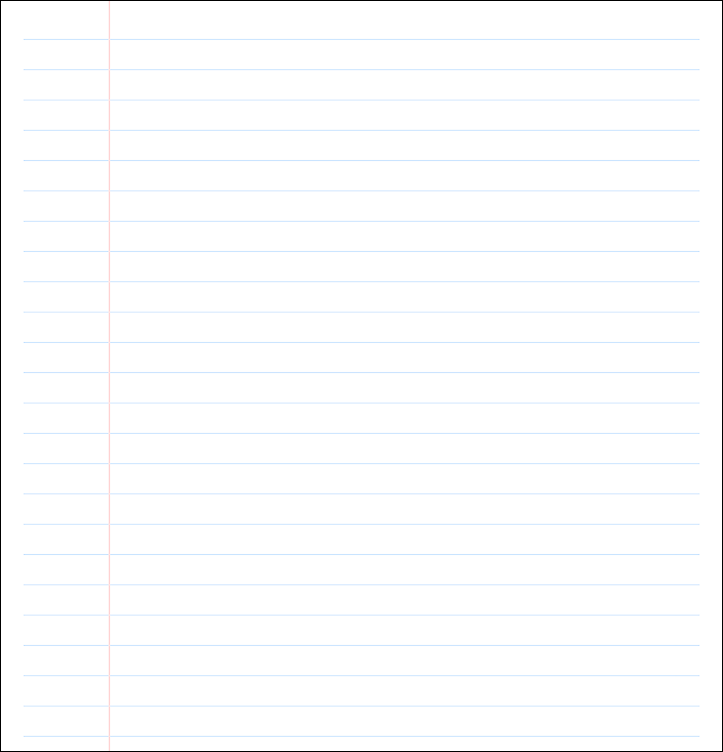

Bonjour ! Je suis un étudiant de technique d’intégration multimédia au cegep Édouard Montpetit. Je suis un développeur de médias interactifs et un monteur vidéo qui adore créer, apprendre et expérimenter.
